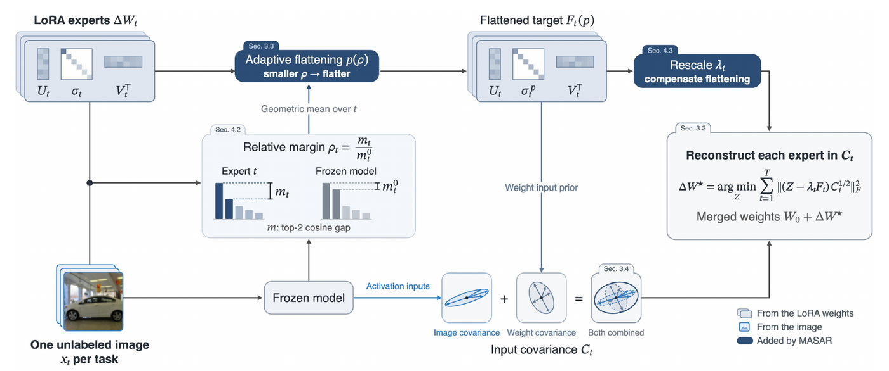

Let Expert Confidence Guide LoRA Merging: Margin-Aware Spectral Adaptation
Harvard AI & Robotics Lab · 2026
Sets how much to flatten each LoRA expert from its prediction margin on one unlabeled example. Beats the best label-free baseline by over 7 accuracy points on CLIP ViT-B/32.